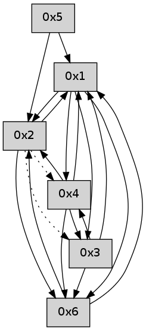

>> << IDX [start] -100 -25 -5 +0 +5 +25 +100 [535.071208]
 Previous packets
----------------------------------------------------------------------
530.150130 beacon01(adaf) #0 coord=01,02,05,03,04,06 cycle=432.0ms assoc
-- color-indic=0 64 2a b3
530.160091 beacon02(adaf) #0 coord=01,02,05,03,04,06 cycle=432.0ms assoc 64 7b 4c
530.170092 beacon05(adaf) #0 coord=01,02,05,03,04,06 cycle=432.0ms assoc 64 dd 66
530.180092 beacon03(adaf) #0 coord=01,02,05,03,04,06 cycle=432.0ms assoc 64 41 42
530.190095 beacon04(adaf) #0 coord=01,02,05,03,04,06 cycle=432.0ms assoc 64 e7 68
530.200091 beacon06(adaf) #0 coord=01,02,05,03,04,06 cycle=432.0ms assoc 64 93 74
----------------------------------------------------------------------
530.642238 beacon01(adaf) #0 coord=01,02,05,03,04,06 cycle=432.0ms assoc
-- color-indic=0 64 66 03
530.652197 beacon02(adaf) #0 coord=01,02,05,03,04,06 cycle=432.0ms assoc 64 37 fc
530.662198 beacon05(adaf) #0 coord=01,02,05,03,04,06 cycle=432.0ms assoc 64 91 d6
530.672199 beacon03(adaf) #0 coord=01,02,05,03,04,06 cycle=432.0ms assoc 64 0d f2
530.682199 beacon04(adaf) #0 coord=01,02,05,03,04,06 cycle=432.0ms assoc 64 ab d8
530.692199 beacon06(adaf) #0 coord=01,02,05,03,04,06 cycle=432.0ms assoc 64 df c4
530.703890 [Hello(4): seq=330 sym=6,3 asym=1 sysInfo= stat=6:6,0,0,0/3:12,0,0,0/1:12,0,0,0]
530.707300 [Hello(1): seq=229 sym=2,6,3,4 sysInfo= stat=2:11,0,0,0/6:13,0,0,0/3:6,0,0,0/4:1,0,0,0]
----------------------------------------------------------------------
531.134345 beacon01(adaf) #0 coord=01,02,05,03,04,06 cycle=432.0ms assoc
-- color-indic=0 64 a2 6c
531.144306 beacon02(adaf) #0 coord=01,02,05,03,04,06 cycle=432.0ms assoc 64 f3 93
531.154306 beacon05(adaf) #0 coord=01,02,05,03,04,06 cycle=432.0ms assoc 64 55 b9
531.164307 beacon03(adaf) #0 coord=01,02,05,03,04,06 cycle=432.0ms assoc 64 c9 9d
531.174306 beacon04(adaf) #0 coord=01,02,05,03,04,06 cycle=432.0ms assoc 64 6f b7
531.184306 beacon06(adaf) #0 coord=01,02,05,03,04,06 cycle=432.0ms assoc 64 1b ab
----------------------------------------------------------------------
531.626452 beacon01(adaf) #0 coord=01,02,05,03,04,06 cycle=432.0ms assoc
-- color-indic=0 64 ef 6b
531.636413 beacon02(adaf) #0 coord=01,02,05,03,04,06 cycle=432.0ms assoc 64 be 94
531.646413 beacon05(adaf) #0 coord=01,02,05,03,04,06 cycle=432.0ms assoc 64 18 be
531.656414 beacon03(adaf) #0 coord=01,02,05,03,04,06 cycle=432.0ms assoc 64 84 9a
531.666415 beacon04(adaf) #0 coord=01,02,05,03,04,06 cycle=432.0ms assoc 64 22 b0
531.676415 beacon06(adaf) #0 coord=01,02,05,03,04,06 cycle=432.0ms assoc 64 56 ac
531.687545 [Hello(1): seq=230 sym=2,6,3,4 sysInfo= stat=2:12,0,0,0/6:13,0,0,0/3:6,0,0,0/4:1,0,0,0]
531.691731 [Hello(4): seq=331 sym=6,3,1 sysInfo= stat=6:6,0,0,0/3:13,0,0,0/1:13,0,0,0]
----------------------------------------------------------------------
532.118560 beacon01(adaf) #0 coord=01,02,05,03,04,06 cycle=432.0ms assoc
-- color-indic=0 64 2b 04
532.128521 beacon02(adaf) #0 coord=01,02,05,03,04,06 cycle=432.0ms assoc 64 7a fb
532.138521 beacon05(adaf) #0 coord=01,02,05,03,04,06 cycle=432.0ms assoc 64 dc d1
532.148521 beacon03(adaf) #0 coord=01,02,05,03,04,06 cycle=432.0ms assoc 64 40 f5
532.158523 beacon04(adaf) #0 coord=01,02,05,03,04,06 cycle=432.0ms assoc 64 e6 df
532.168521 beacon06(adaf) #0 coord=01,02,05,03,04,06 cycle=432.0ms assoc 64 92 c3
532.180180 [Hello(3): seq=331 sym=4,6,1 sysInfo= stat=4:11,0,0,0/6:6,0,0,0/1:2,0,0,0]
532.183907 [Hello(2): seq=826 sym=1,6 asym=4,3 sysInfo= stat=1:13,0,0,0/6:12,0,0,0/4:3,0,0,0/3:5,0,0,0]
----------------------------------------------------------------------
532.610667 beacon01(adaf) #0 coord=01,02,05,03,04,06 cycle=432.0ms assoc
-- color-indic=0 64 67 b4
532.620628 beacon02(adaf) #0 coord=01,02,05,03,04,06 cycle=432.0ms assoc 64 36 4b
532.630629 beacon05(adaf) #0 coord=01,02,05,03,04,06 cycle=432.0ms assoc 64 90 61
532.640629 beacon03(adaf) #0 coord=01,02,05,03,04,06 cycle=432.0ms assoc 64 0c 45
532.650631 beacon04(adaf) #0 coord=01,02,05,03,04,06 cycle=432.0ms assoc 64 aa 6f
532.660629 beacon06(adaf) #0 coord=01,02,05,03,04,06 cycle=432.0ms assoc 64 de 73
532.671768 [Hello(1): seq=231 sym=2,6,3,4 sysInfo= stat=2:13,0,0,0/6:14,0,0,0/3:6,0,0,0/4:2,0,0,0]
532.675966 [Hello(4): seq=332 sym=6,3,1,2 sysInfo= stat=6:6,0,0,0/3:14,0,0,0/1:13,0,0,0/2:0,0,0,0]
----------------------------------------------------------------------
533.102776 beacon01(adaf) #0 coord=01,02,05,03,04,06 cycle=432.0ms assoc
-- color-indic=0 64 a3 db
533.112736 beacon02(adaf) #0 coord=01,02,05,03,04,06 cycle=432.0ms assoc 64 f2 24
533.122736 beacon05(adaf) #0 coord=01,02,05,03,04,06 cycle=432.0ms assoc 64 54 0e
533.132740 beacon03(adaf) #0 coord=01,02,05,03,04,06 cycle=432.0ms assoc 64 c8 2a
533.142738 beacon04(adaf) #0 coord=01,02,05,03,04,06 cycle=432.0ms assoc 64 6e 00
533.152739 beacon06(adaf) #0 coord=01,02,05,03,04,06 cycle=432.0ms assoc 64 1a 1c
----------------------------------------------------------------------
533.594884 beacon01(adaf) #0 coord=01,02,05,03,04,06 cycle=432.0ms assoc
-- color-indic=0 64 fd ba
533.604846 beacon02(adaf) #0 coord=01,02,05,03,04,06 cycle=432.0ms assoc 64 ac 45
533.614846 beacon05(adaf) #0 coord=01,02,05,03,04,06 cycle=432.0ms assoc 64 0a 6f
533.624846 beacon03(adaf) #0 coord=01,02,05,03,04,06 cycle=432.0ms assoc 64 96 4b
533.634846 beacon04(adaf) #0 coord=01,02,05,03,04,06 cycle=432.0ms assoc 64 30 61
533.644846 beacon06(adaf) #0 coord=01,02,05,03,04,06 cycle=432.0ms assoc 64 44 7d
533.656531 [Hello(4): seq=333 sym=6,3,1,2 sysInfo= stat=6:6,0,0,0/3:15,0,0,0/1:13,0,0,0/2:0,0,0,0]
533.661535 [Hello(1): seq=232 sym=2,6,3,4 sysInfo= stat=2:14,0,0,0/6:14,0,0,0/3:6,0,0,0/4:3,0,0,0]
----------------------------------------------------------------------
534.086993 beacon01(adaf) #0 coord=01,02,05,03,04,06 cycle=432.0ms assoc
-- color-indic=0 64 39 d5
534.096954 beacon02(adaf) #0 coord=01,02,05,03,04,06 cycle=432.0ms assoc 64 68 2a
534.106953 beacon05(adaf) #0 coord=01,02,05,03,04,06 cycle=432.0ms assoc 64 ce 00
534.116953 beacon03(adaf) #0 coord=01,02,05,03,04,06 cycle=432.0ms assoc 64 52 24
534.126953 beacon04(adaf) #0 coord=01,02,05,03,04,06 cycle=432.0ms assoc 64 f4 0e
534.136954 beacon06(adaf) #0 coord=01,02,05,03,04,06 cycle=432.0ms assoc 64 80 12
----------------------------------------------------------------------
534.579100 beacon01(adaf) #0 coord=01,02,05,03,04,06 cycle=432.0ms assoc
-- color-indic=0 64 75 65
534.589061 beacon02(adaf) #0 coord=01,02,05,03,04,06 cycle=432.0ms assoc 64 24 9a
534.599061 beacon05(adaf) #0 coord=01,02,05,03,04,06 cycle=432.0ms assoc 64 82 b0
534.609062 beacon03(adaf) #0 coord=01,02,05,03,04,06 cycle=432.0ms assoc 64 1e 94
534.619063 beacon04(adaf) #0 coord=01,02,05,03,04,06 cycle=432.0ms assoc 64 b8 be
534.629061 beacon06(adaf) #0 coord=01,02,05,03,04,06 cycle=432.0ms assoc 64 cc a2
534.640762 [Hello(4): seq=334 sym=6,3,1,2 sysInfo= stat=6:6,0,0,0/3:15,0,0,0/1:14,0,0,0/2:0,0,0,0]